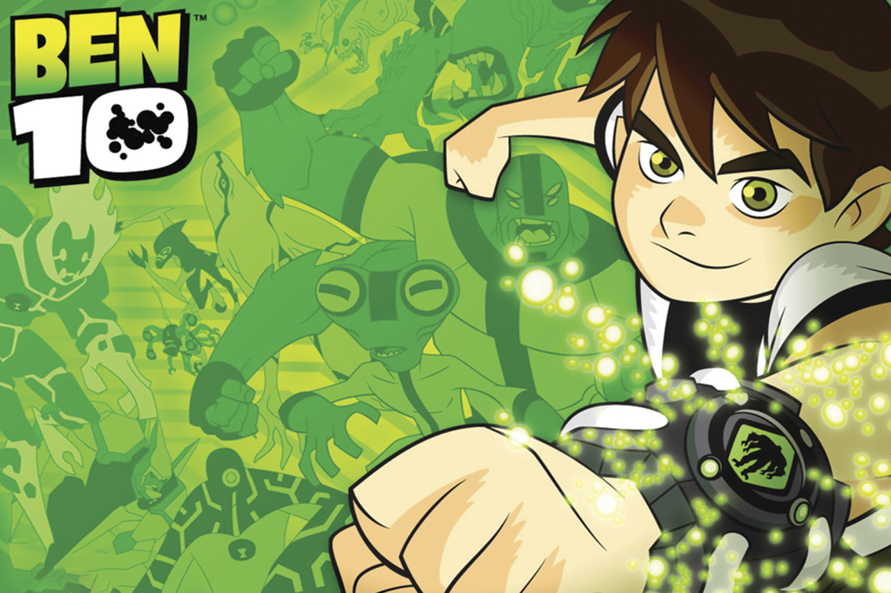
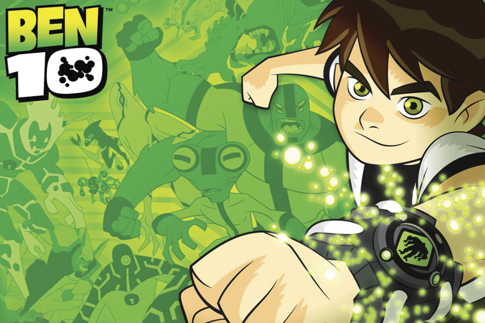

Sinopse
Durante um acampamento de verão, um garoto chamado Ben Tennyson, encontra um dispositivo extraterrestre chamado Omnitrix. O Omnitrix é uma espécie de relógio que permite a Ben se transformar em diferentes alienígenas, cada um com habilidades únicas. Ele rapidamente descobre que o Omnitrix o coloca no meio de uma batalha intergaláctica entre diferentes espécies alienígenas.

4.9